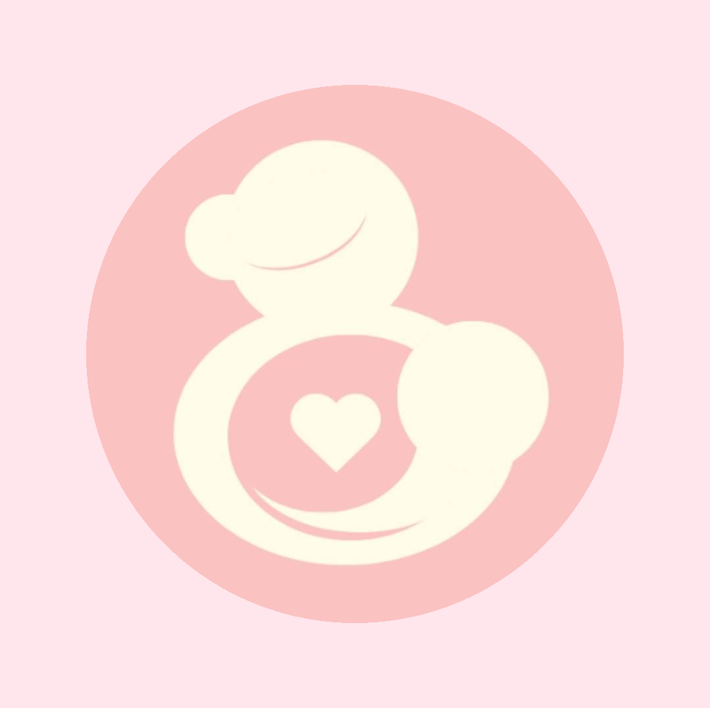
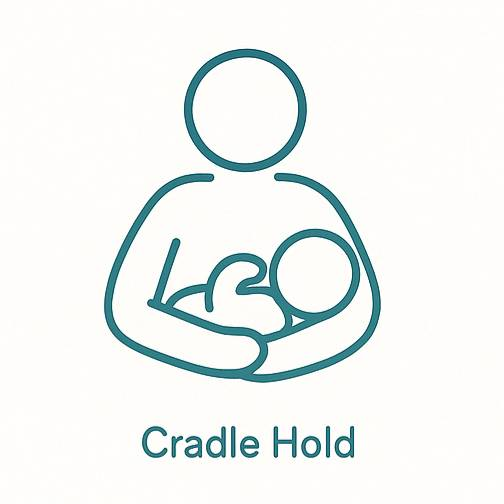
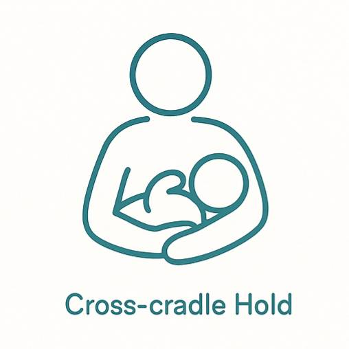
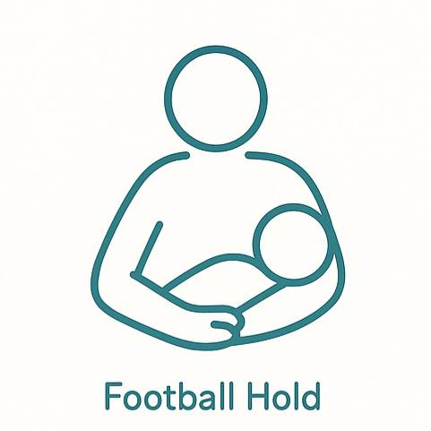
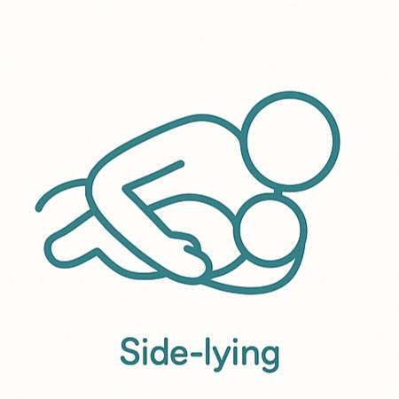
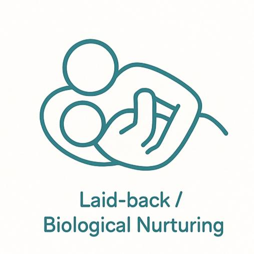
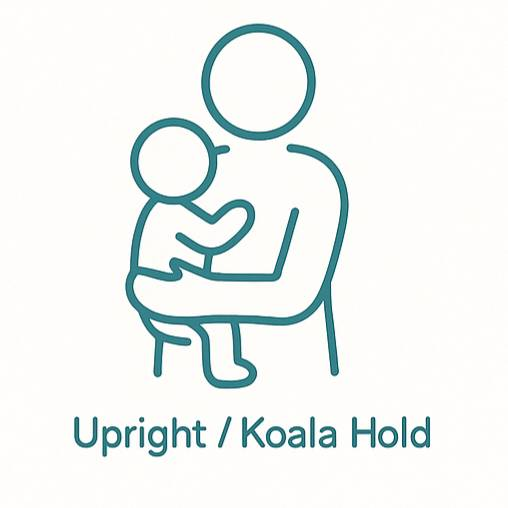

母乳哺育姿勢教學
🧶 搖籃式（Cradle Hold）
最經典、最常見的姿勢。寶寶頭靠在媽媽手臂彎裡，身體側向媽媽。
適合：大部分寶寶，特別是已經會吸的。 
🪢 交叉搖籃式（Cross-cradle Hold）
跟搖籃式很像，但用相對側的手托住寶寶的頭，比較方便協助寶寶含乳。
適合：新手媽媽或早產寶寶。 
🌾 橄欖球式 / 美式足球式（Football Hold）
寶寶身體在媽媽側邊、腋下，像夾著美式橄欖球一樣。
適合：剖腹產媽媽或乳房較大的媽媽。 
🌙 側躺式（Side-lying）
媽媽和寶寶都躺著，面對面餵奶。
適合：夜間哺乳、剖腹產、媽媽疲勞。 
☁️ 反向側躺式 / 半仰式（Laid-back / Biological Nurturing）
媽媽半躺著或躺著，讓寶寶趴在胸前自己找乳頭。
適合：想放鬆的媽媽、讓寶寶用本能找乳。 
🐛 坐姿餵奶（Upright / Koala Hold）
寶寶坐著（像小無尾熊一樣抱著媽媽）吸奶。
適合：有胃食道逆流的寶寶。 